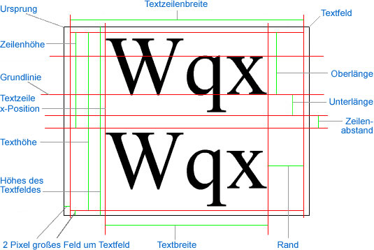

| Paket | flash.text |
| Klasse | public class TextLineMetrics |
| Vererbung | TextLineMetrics |
| Sprachversion: | ActionScript 3.0 |
| Laufzeitversionen: | AIR 1.0, Flash Player 9, Flash Lite 4 |
flash.text.TextField.getLineMetrics() zurückgegeben.
Die Maße im Zusammenhang mit dem Textfeld, das die Textzeile enthält (z. B. das Maß „Textfeldhöhe“ im Diagramm), finden Sie unter „flash.text.TextField“.
Aus dem folgenden Diagramm gehen die Punkte und Maße eines Textfelds und der Textzeile innerhalb des Textfelds hervor:

Verwandte API-Elemente
 Vererbte öffentliche Eigenschaften ausblenden
Vererbte öffentliche Eigenschaften ausblenden Vererbte öffentliche Eigenschaften anzeigen
Vererbte öffentliche Eigenschaften anzeigen| Eigenschaft | Definiert von | ||
|---|---|---|---|
| ascent : Number
Die Oberlänge des Texts ist die Länge von der Grundlinie bis zur Oberkante der Zeile in Pixel. | TextLineMetrics | ||
 | constructor : Object
Ein Verweis auf das Klassenobjekt oder die Konstruktorfunktion für eine angegebene Objektinstanz. | Object | |
| descent : Number
Die Unterlänge des Texts ist die Länge von der Grundlinie bis zur Unterkante der Zeile in Pixel. | TextLineMetrics | ||
| height : Number
Die Höhe des Texts in den ausgewählten Zeilen (nicht unbedingt des gesamten Texts) in Pixel. | TextLineMetrics | ||
| leading : Number
Der Zeilenabstand ist der vertikale Abstand zwischen den Textzeilen. | TextLineMetrics | ||
| width : Number
Der Wert für die Breite ist die Textbreite in den ausgewählten Zeilen (nicht unbedingt des gesamten Texts) in Pixel. | TextLineMetrics | ||
| x : Number
Der x-Wert ist die linke Position des ersten Zeichens in Pixel. | TextLineMetrics | ||
| Methode | Definiert von | ||
|---|---|---|---|
TextLineMetrics(x:Number, width:Number, height:Number, ascent:Number, descent:Number, leading:Number)
Erstellt ein TextLineMetrics-Objekt. | TextLineMetrics | ||
|
Gibt an, ob für ein Objekt eine bestimmte Eigenschaft definiert wurde. | Object | |
|
Gibt an, ob eine Instanz der Object-Klasse in der Prototypkette des Objekts vorhanden ist, das als Parameter angegeben wurde. | Object | |
|
Gibt an, ob die angegebene Eigenschaft vorhanden ist und durchlaufen werden kann. | Object | |
|
Legt die Verfügbarkeit einer dynamischen Eigenschaft für Schleifenoperationen fest. | Object | |
|
Gibt die Stringdarstellung dieses Objekts zurück, formatiert entsprechend den Konventionen des Gebietsschemas. | Object | |
|
Gibt das angegebene Objekt als String zurück. | Object | |
|
Gibt den Grundwert des angegebenen Objekts zurück. | Object | |
ascent | Eigenschaft |
public var ascent:Number| Sprachversion: | ActionScript 3.0 |
| Laufzeitversionen: | AIR 1.0, Flash Player 9, Flash Lite 4 |
Die Oberlänge des Texts ist die Länge von der Grundlinie bis zur Oberkante der Zeile in Pixel. Siehe „Oberlänge“ im Übersichtsdiagramm für diese Klasse.
Verwandte API-Elemente
descent | Eigenschaft |
public var descent:Number| Sprachversion: | ActionScript 3.0 |
| Laufzeitversionen: | AIR 1.0, Flash Player 9, Flash Lite 4 |
Die Unterlänge des Texts ist die Länge von der Grundlinie bis zur Unterkante der Zeile in Pixel. Siehe „Unterlänge“ im Übersichtsdiagramm für diese Klasse.
Verwandte API-Elemente
height | Eigenschaft |
public var height:Number| Sprachversion: | ActionScript 3.0 |
| Laufzeitversionen: | AIR 1.0, Flash Player 9, Flash Lite 4 |
Die Höhe des Texts in den ausgewählten Zeilen (nicht unbedingt des gesamten Texts) in Pixel. Die Höhe der Textzeile umfasst nicht die Höhe des Zwischenraums. Siehe „Zeilenhöhe“ im Übersichtsdiagramm für diese Klasse.
Verwandte API-Elemente
leading | Eigenschaft |
public var leading:Number| Sprachversion: | ActionScript 3.0 |
| Laufzeitversionen: | AIR 1.0, Flash Player 9, Flash Lite 4 |
Der Zeilenabstand ist der vertikale Abstand zwischen den Textzeilen. Siehe „Zeilenabstand“ im Übersichtsdiagramm für diese Klasse.
Verwandte API-Elemente
width | Eigenschaft |
public var width:Number| Sprachversion: | ActionScript 3.0 |
| Laufzeitversionen: | AIR 1.0, Flash Player 9, Flash Lite 4 |
Der Wert für die Breite ist die Textbreite in den ausgewählten Zeilen (nicht unbedingt des gesamten Texts) in Pixel. Die Breite der Textzeile ist nicht identisch mit der Breite des Textfelds. Die Breite der Textzeile muss relativ zur Textfeldbreite gesehen werden (abzüglich des Zwischenraums von 4 Pixel, d. h. 2 Pixel auf jeder Seite). Siehe „Breite der Textzeile“ im Übersichtsdiagramm für diese Klasse.
Verwandte API-Elemente
x | Eigenschaft |
public var x:Number| Sprachversion: | ActionScript 3.0 |
| Laufzeitversionen: | AIR 1.0, Flash Player 9, Flash Lite 4 |
Der x-Wert ist die linke Position des ersten Zeichens in Pixel. Dieser Wert umfasst den Rand, eventuelle Einzüge und den Zwischenraum. Siehe „x-Position der Textzeile“ im Übersichtsdiagramm für diese Klasse.
Verwandte API-Elemente
TextLineMetrics | () | Konstruktor |
public function TextLineMetrics(x:Number, width:Number, height:Number, ascent:Number, descent:Number, leading:Number)| Sprachversion: | ActionScript 3.0 |
| Laufzeitversionen: | AIR 1.0, Flash Player 9, Flash Lite 4 |
Erstellt ein TextLineMetrics-Objekt. Das TextLineMetrics-Objekt enthält Informationen zu den Maßen einer Textzeile innerhalb eines Textfelds. Objekte dieser Klasse werden von der Methode flash.text.TextField.getLineMetrics() zurückgegeben.
Kontextinformationen zu den verschiedenen Eigenschaften finden Sie im Übersichtsdiagramm für diese Klasse.
Parameterx:Number — Die linke Position des ersten Zeichens in Pixel.
| |
width:Number — Die Breite des Texts in den ausgewählten Zeilen (nicht unbedingt des gesamten Texts) in Pixel.
| |
height:Number — Die Höhe des Texts in den ausgewählten Zeilen (nicht unbedingt des gesamten Texts) in Pixel.
| |
ascent:Number — Die Länge von der Grundlinie bis zur obersten Stelle der Zeile in Pixel.
| |
descent:Number — Die Länge von der Grundlinie bis zur untersten Stelle der Zeile in Pixel.
| |
leading:Number — Der vertikale Abstand zwischen den Textzeilen.
|
Verwandte API-Elemente
- Erstellen Sie die Eigenschaft
labelvom Typ „TextField“. - Der Konstruktor ruft die
configureAssets()-Methode auf, die Folgendes durchführt:- Die Bühne wird oben links ausgerichtet und ohne Skalierung angezeigt.
- Es wird das neue TextField-Objekt
labelerstellt. - Der Hintergrund von
labelwird aktiviert, und die Farbe wird auf weiß eingestellt. - Es wird festgelegt, dass sich der Text von
labelüber mehrere Zeilen mit automatischem Zeilenumbruch erstrecken kann. - Das Ergebnis eines Aufrufs an
getLabelText()wird dertext-Eigenschaft vonlabelzugewiesen. Mit der MethodegetLabelText()wird eine Variable vom Typ XML erstellt und dem XML-Knotenbodyzugewiesen, der einen langen Satz enthält. labelwird der Anzeigeliste mithilfe vonaddChild()hinzugefügt.
- Anschließend wird die
resizeHandler()-Methode hinzugefügt, die als Listener fürresize-Ereignisse auf der Bühne fungiert. Bei jeder Größenänderung des Flash Player-Fensters wird einRESIZE-Ereignis ausgelöst. Dies hat die folgenden Auswirkungen:draw()wird aufgerufen, damitlabelin der Mitte der Bühne, umgeben von einem 10-Pixel-Puffer, angezeigt wird.setTimeout()führtshowMetrics()anschließend nach einer kurzen Verzögerung aus. Die Verzögerung wird dadurch verursacht, dass die Textzeilenmaße erst nach Abschluss desRESIZE-Ereignisses und nach der vollständigen Neuzeichnung der Bühne aktualisiert werden.- Mit
showMetrics()wird die TextLineMetrics-Variablemetricsdem Ergebnis eines Aufrufs vongetLineMetrics()zugewiesen. Diese Variable wird anschließend an eine neue Instanz der LineMetricsReader-Instanzreaderübergeben. Die beiden Variablen werden anschließend in Aufrufen vontrace()zum Drucken der ersten (und einzigen) Zeile vonlabelund Informationen aus der LineMetricsReader-Instanz (über dietoString()-Methode) verwendet.
- Der Konstruktor erzwingt eine einmalige Auslösung
resize-Ereignisses, damitlabelbeim ersten Laden der SWF-Datei richtig gezeichnet wird.
package {
import flash.display.Sprite;
import flash.display.StageAlign;
import flash.display.StageScaleMode;
import flash.events.*;
import flash.text.TextField;
import flash.text.TextLineMetrics;
import flash.utils.setTimeout;
public class TextLineMetricsExample extends Sprite {
private var gutter:int = 10;
private var label:TextField;
public function TextLineMetricsExample() {
configureAssets();
configureListeners();
resizeHandler(new Event(Event.RESIZE));
}
private function showMetrics():void {
var metrics:TextLineMetrics = label.getLineMetrics(0);
var reader:LineMetricsReader = new LineMetricsReader(metrics);
trace("lineText: " + label.getLineText(0));
trace("metrics: " + reader);
}
private function configureAssets():void {
stage.align = StageAlign.TOP_LEFT;
stage.scaleMode = StageScaleMode.NO_SCALE;
label = new TextField();
label.background = true;
label.backgroundColor = 0xFFFFFF;
label.multiline = true;
label.wordWrap = true;
label.text = getLabelText();
addChild(label);
}
private function configureListeners():void {
stage.addEventListener(Event.RESIZE, resizeHandler);
}
private function resizeHandler(event:Event):void {
draw();
setTimeout(showMetrics, 100);
}
private function draw():void {
label.x = gutter;
label.y = gutter;
label.width = stage.stageWidth - (gutter * 2);
label.height = stage.stageHeight - (gutter * 2);
}
private function getLabelText():String {
var text:XML = <body>The Flex product line enables developers to build rich Internet applications that blend the responsiveness of desktop software, the cross-platform reach of the web, and the expressiveness of the Flash Platform.</body>
return text.toString();
}
}
}
import flash.text.TextLineMetrics;
class LineMetricsReader {
private var metrics:TextLineMetrics;
public function LineMetricsReader(metrics:TextLineMetrics) {
this.metrics = metrics;
}
public function toString():String {
return "[TextLineMetrics ascent:" + metrics.ascent
+ ", descent:" + metrics.descent
+ ", leading:" + metrics.leading
+ ", width:" + metrics.width
+ ", height:" + metrics.height
+ ", x:" + metrics.x
+ "]";
}
}
Tue Jun 12 2018, 10:04 AM Z